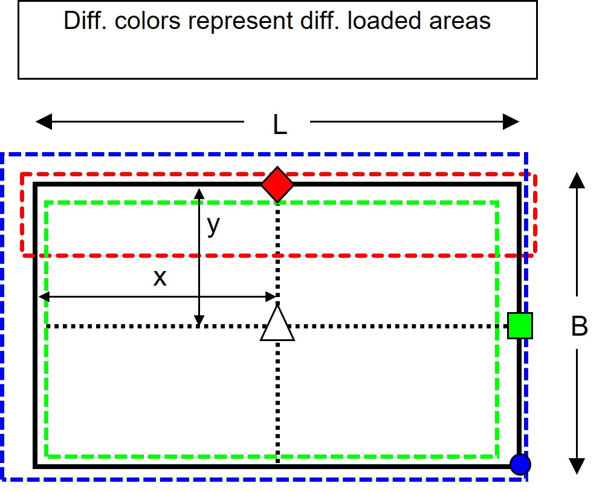
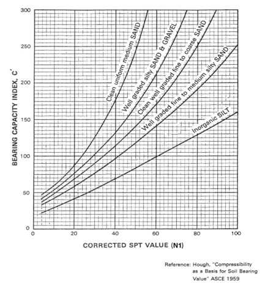

Bearing Capacity of Shallow Foundations new#
Ground Profile#
import json
import pandas as pd
import numpy as np
import math
ground_info = {
"ground_elevation": 10, # unit: ft
"slope_a": 15, # unit: ft
"surface_elevation": 67, # unit: ft
"surcharge_weight": 125, # unit: ft
"ground_water_depth": 42, # unit: ft
"overburden_load": 0.250, # unit: ksf
"footing_shape": "rectangular", # or circular
"footing_embedment": 2.0, # unit: ft
"footing_width": 5.0, # unit: ft
"footing_length": 45, # unit: ft
## soil_type can only be chosen from supported types:
# "inorganic silt" , "well graded fine to medium silty sand" , "clean well graded fine to coarse sand"
# "well graded silty sand & gravel" , "well graded silty sand & gravel" , "clean uniform medium sand"
# type layer information to this section
"layers": [
{"ESU":"3D", "top":67, "bottom":64.5, "soil_type":"well graded silty sand & gravel",
"sat_unit_weight": 140, "AASHTO_N1":55},
{"ESU":"3C", "top":64.5, "bottom":62, "soil_type":"well graded silty sand & gravel",
"sat_unit_weight": 135, "AASHTO_N1":38},
{"ESU":"3C", "top":62, "bottom":59.5, "soil_type":"well graded silty sand & gravel",
"sat_unit_weight": 135, "AASHTO_N1":42},
{"ESU":"3C", "top":59.5, "bottom":57, "soil_type":"well graded silty sand & gravel",
"sat_unit_weight": 135, "AASHTO_N1":45},
{"ESU":"3D", "top":57, "bottom":52, "soil_type":"well graded silty sand & gravel",
"sat_unit_weight": 140, "AASHTO_N1":58},
{"ESU":"3D", "top":52, "bottom":47, "soil_type":"well graded silty sand & gravel",
"sat_unit_weight": 140, "AASHTO_N1":100},
{"ESU":"3D", "top":47, "bottom":42, "soil_type":"well graded silty sand & gravel",
"sat_unit_weight": 140, "AASHTO_N1":100},
{"ESU":"3D", "top":42, "bottom":37, "soil_type":"well graded silty sand & gravel",
"sat_unit_weight": 140, "AASHTO_N1":75},
{"ESU":"3D", "top":37, "bottom":32, "soil_type":"well graded silty sand & gravel",
"sat_unit_weight": 130, "AASHTO_N1":100},
{"ESU":"3D", "top":32, "bottom":27, "soil_type":"well graded silty sand & gravel",
"sat_unit_weight": 130, "AASHTO_N1":100},
{"ESU":"3D", "top":27, "bottom":22, "soil_type":"well graded silty sand & gravel",
"sat_unit_weight": 130, "AASHTO_N1":100},
{"ESU":"3D", "top":22, "bottom":17, "soil_type":"well graded silty sand & gravel",
"sat_unit_weight": 130, "AASHTO_N1":55},
{"ESU":"3D", "top":17, "bottom":12, "soil_type":"well graded silty sand & gravel",
"sat_unit_weight": 130, "AASHTO_N1":100},
{"ESU":"3D", "top":12, "bottom":7, "soil_type":"well graded silty sand & gravel",
"sat_unit_weight": 130, "AASHTO_N1":100},
{"ESU":"4D", "top":7, "bottom":2, "soil_type":"inorganic silt",
"sat_unit_weight": 130, "AASHTO_N1":100},
{"ESU":"4C", "top":2, "bottom":-6, "soil_type":"inorganic silt",
"sat_unit_weight": 120, "AASHTO_N1":70},
{"ESU":"4D", "top":-6, "bottom":-8, "soil_type":"inorganic silt",
"sat_unit_weight": 130, "AASHTO_N1":100},
{"ESU":"4D", "top":-8, "bottom":-13, "soil_type":"inorganic silt",
"sat_unit_weight": 130, "AASHTO_N1":100},
{"ESU":"4D", "top":-13, "bottom":-18, "soil_type":"inorganic silt",
"sat_unit_weight": 130, "AASHTO_N1":100},
{"ESU":"4D", "top":-18, "bottom":-23, "soil_type":"inorganic silt",
"sat_unit_weight": 130, "AASHTO_N1":100},
{"ESU":"4D", "top":-23, "bottom":-28, "soil_type":"inorganic silt",
"sat_unit_weight": 130, "AASHTO_N1":100},
{"ESU":"4D", "top":-28, "bottom":-33, "soil_type":"inorganic silt",
"sat_unit_weight": 130, "AASHTO_N1":78},
{"ESU":"4C", "top":-33, "bottom":-38, "soil_type":"inorganic silt",
"sat_unit_weight": 120, "AASHTO_N1":47},
{"ESU":"4D", "top":-38, "bottom":-43, "soil_type":"inorganic silt",
"sat_unit_weight": 130, "AASHTO_N1":42},
]
}
with open('ground_info.json', 'w') as outfile:
json.dump(ground_info , outfile)
Preliminary calculation to prepare data such as the depth and the thickness of each layer, and the vertical stress distribution for later calculation. The data is shown in the form of dataframe. The DataFrame allows to present data and results in a spreadsheet-like way. User can call the data in cell by typing table_name.loc[row_number][column_lable]. For example, ground_table.loc[1]['AASHTO_N1'] returns value 38. Notice that the order of rows starts from zero.
# Read ground information
with open("ground_info.json", "r") as read_file:
ground_data = json.load(read_file)
# calculating ground stress and depth of each layer. Returns 'ground_table'
from hapy.shallow_foundation import shallow_footing as sf
(ground_table, u_mid, depth_top,depth_bottom, sig_vo_ef, sig_vo_mid,
layer_thickness, midpoint_depth_below_footing, AASHTO_C) = sf.groundinfo(ground_data)
ground_table
---------------------------------------------------------------------------
ModuleNotFoundError Traceback (most recent call last)
Cell In[2], line 6
3 ground_data = json.load(read_file)
5 # calculating ground stress and depth of each layer. Returns 'ground_table'
----> 6 from hapy.shallow_foundation import shallow_footing as sf
8 (ground_table, u_mid, depth_top,depth_bottom, sig_vo_ef, sig_vo_mid,
9 layer_thickness, midpoint_depth_below_footing, AASHTO_C) = sf.groundinfo(ground_data)
11 ground_table
ModuleNotFoundError: No module named 'hapy'
Footing Calculation#
Goemetries of footing.
{kind=link}
Click “+” to view figure if it is not shown.
Click the button to view the geometries of footing!
{image} images/footing_fig.jpg :alt: footing dimension :width: 350px :align: center
Manually change the value of the footing geometries in this section. Then click “run” to import the data in this section to the program.
footing_width = 30 # B, unit: ft
footing_length = 45 # L, unit: ft
cal_x = footing_length/2
cal_y = footing_width/2
influence_z = 2*footing_width # depth of influence, 2*W for squrare footing, 6*W for infinite footing.
# footing load
load = 84.1 # unit: ksf
req_load = 50 # unit: kips
stress = 0.521 # unit: ksf
Footing calculation. The outputs is printed below. The calculation based upon Newmark’s solution of the Boussinesq Equation.
(boussinesq_table, actual_depth, l_b_center_q) = sf.boussinesq_cal(ground_data, footing_width, footing_length, cal_x, cal_y,depth_top,
depth_bottom,layer_thickness, midpoint_depth_below_footing, load)
boussinesq_table
Plot the geostatic stress distribution, excessive stress distribution, the table of ground condition, and the table of footing dimensions to the Haley Aldrich template.
Show code cell source
from hapy.plotting import HCFigure
import datetime as datetime
import numpy as np
asdf = HCFigure(style = 'ha',
title="HA-204 PRELIMINARY SETTLEMENT \nDUE TO NEW FILL",
author='Cal',
date=datetime.datetime.now(),
filename='file',
size=[8.5, 11],
orientation='p',
city='Sparrows Point',
state='Maryland',
sitename='aes Sparrows point Lng Terminal',
prjnum='XXXX-XX',
prjname='Sparrows Point LNG',
fignum='32907-260',
# do not number bullet points of notes
note=["REF: ELASTIC SOLUTIONS FOR SOIL AND ROCK MECHANICS, BY H.G. POULOS & E.H. DAVIS",
"REF: AN INTRODUCTION TO GEOTECHNICAL ENGINEERING, BY R.D. HOLTZ & W.D. KOVACS"]
)
# Plot geostatic stress distribution
loadAx = asdf.addPlotAxes([0.28, 0.73, 0.5, 0.2]) # define the position of ground stress plot
loadAx.plot(u_mid, depth_top, label='water pressure')
loadAx.plot(sig_vo_ef, depth_top, label='effective stress')
loadAx.plot(sig_vo_mid, depth_top, label='total stress')
loadAx.legend()
loadAx.set_ylim(loadAx.get_ylim()[::-1])
loadAx.set_xlabel('Geostatic stress (pcf)')
loadAx.set_ylabel('Depth (ft)')
loadAx.grid()
# plot vertical excessive stress distribution
stressAx = asdf.addPlotAxes([0.28, 0.46, 0.5, 0.2]) # define the position of plot
stressAx.plot(l_b_center_q, depth_top)
stressAx.set_ylim(stressAx.get_ylim()[::-1])
# stressAx.set_xlim(stressAx.get_xlim()[::-1])
stressAx.set_xlabel('Applied Stress (psf)')
stressAx.set_ylabel('Depth (ft)')
stressAx.grid()
# plot the tables of ground and footing information
tableAx1 = asdf.addPlotAxes([0.28, 0.15, 0.25, 0.2])
tableAx1.axis('tight')
tableAx1.axis('off')
tableAx1.set_title('Surface & Groundwater Conditions', loc='right')
temp_data = pd.DataFrame([ground_data["surface_elevation"], ground_data["ground_water_depth"],
ground_data["surcharge_weight"], ground_data["overburden_load"]])
tableAx1.table(cellText = temp_data.values,
rowLabels=["surface elevation (ft)","ground water depth (ft)","Density of overburden (pcf)","overburden load (ksf)"],
colWidths=[0.45,0.5],
loc="upper right")
# plot the tables of ground and footing information
tableAx2 = asdf.addPlotAxes([0.6, 0.15, 0.25, 0.2])
tableAx2.axis('tight')
tableAx2.axis('off')
tableAx2.set_title('Footing DImensions')
temp_data = pd.DataFrame([ground_data["footing_shape"], ground_data["footing_embedment"],
ground_data["footing_width"], ground_data["footing_length"]])
tableAx2.table(cellText = temp_data.values,
rowLabels=["Footing shape","Embedment, $D_r$ (ft)","Footing width, B (ft)","Footing length, L (ft)"],
colWidths=[0.45,0.5],
loc="upper right")
asdf.add_text()
asdf.saveHCFigure("soil_profile_page.pdf")
Settlement Calculation#
Calculate compression of each layer by following Hough, AASHTO, and WSDOT method. Click “+” to check the calculating progress. The total settlement result will be plotted with footing bearing capacity.
(settlement_table, dh_total_aashto, dh_total_wsdot) = sf.footing_settle(ground_data, depth_top, depth_bottom, midpoint_depth_below_footing,
actual_depth, layer_thickness, AASHTO_C, sig_vo_ef, l_b_center_q)
settlement_table
Bearing Capacity Mult Scenario#
Input soil’s properties. The bearing capacity factors can be found according to the following figure (fig 10.6.3.1.2a-1).
{kind=link}
Click “+” to view figure if it is not shown.
Click the button to view the bearing capacity factor figure.
{image} images/bearing_capacity_fig.jpg :alt: footing dimension :width: 350px :align: center
The above figure is digitized and approximated by polynomial trend line. User can following the formulas to calculate the value of parameters. This program does not provide automatical calculation, although it is easy to implement. The major reason is that human judgement is very necessary to choose the layer for bearing capacity calcualtion. For example, top layer is strong, but the embedment is very close to the 2nd layer and the 2nd layer is weak. In this case, it might be necessary for user to use the properties of the 2nd layer for calculation.

Click “+” to view figure if it is not shown.
Click the button to view the polynomial functions of bearing capacity factor figure.
{image} images/bearing_capacity_poly_fig.jpg :alt: footing dimension :width: 600px :align: center
Type in geometries and the parameters manually. Then click “run” to input data to the program.
# Bearing capacity factors
n_c = 35.5
n_q = 23.2
n_y = 30.2
slope = 'yes' # or = 'no'
friction_angle = 32 # unit: degrees
cohesion = 0 # unit: psf
soil_weight_above_gwt = 120 # unit: pcf
foundation_depth = 2 # unit: ft
depth_to_gwt = 42 # unit: ft
lower_bound_of_length = 45 # footing dimensions. Used for searching best L*B
lower_bound_of_width = 5
varies_of_length = 1
varies_of_width = 7
upper_bound_of_length = 45
upper_bound_of_width = 23
streng_ls = 0.65 # strength limit state (Table 10.5.5.2.1-1)
ex_ls = 0.9 # extreme event limit state (WSDOT GDM)
The result of bearing capacity calculation is shown below. Click “+” button to check the detailed procedures.
# Calculating the bearing capacity
(bearing_table, f_b, strength_limit_state, extreme_event_limit_state) = sf. bearing_capacity(lower_bound_of_width, upper_bound_of_width, varies_of_width,
lower_bound_of_length, upper_bound_of_length, varies_of_length,
slope, friction_angle, cohesion, soil_weight_above_gwt,
foundation_depth, depth_to_gwt, streng_ls, ex_ls, n_c, n_q, n_y)
bearing_table
Plot bearing capacity result to figure template
Show code cell source
from hapy.plotting import HCFigure
import datetime as datetime
import numpy as np
asdf = HCFigure(style = 'ha',
title="HA-204 PRELIMINARY SETTLEMENT \nDUE TO NEW FILL",
author='Cal',
date=datetime.datetime.now(),
filename='file',
size=[8.5, 11],
orientation='l',
city='Sparrows Point',
state='Maryland',
sitename='aes Sparrows point Lng Terminal',
prjnum='XXXX-XX',
prjname='Sparrows Point LNG',
fignum='32907-260',
# do not number bullet points of notes
note=["Settlement estimates calculated based on Hough (1959). Soil layering and groundwater profile based on individual samples reported in boring XXXXX. Depth to bearing is approximately XXX feet from existing ground surface.",
"Footing assumed to be bearing on very dense granular soils at an elevation of XX feet (X feet below existing grade).",
"We have assumed no liquefaction occurs.",
"Footing length and width assumed to be equal (i.e. square footing). -OR- Footing length assumed constant at XX feet (i.e. rectangular footing).",
"The effective footing width for bearing pressure shall be calculated according to Section 6.4 of FHWA-SA-02-024 Geotechnical Engineering Circular No. 5 Shallow Foundations.",
"These recommendations are preliminary results only and are subject to change pending final evaluations of ESUs and site geometry."
]
)
# Plot geostatic stress distribution
bearAx = asdf.addPlotAxes([0.12, 0.33, 0.5, 0.5]) # define the position of ground stress plot
bearAx.plot(f_b, strength_limit_state, label='Strength limit state')
bearAx.plot(f_b, extreme_event_limit_state, label='extreme_event_limit_state')
bearAx.legend()
bearAx.set_xlabel('Effective Footing Width, B (Feet)')
bearAx.set_ylabel('Factored Bearing Capacity (ksf)')
bearAx.grid()
# plot the tables of footing information
footAx = asdf.addPlotAxes([0.67, 0.61, 0.25, 0.2])
footAx.axis('tight')
footAx.axis('off')
footAx.set_title('Footing information')
temp_data = pd.DataFrame([footing_width, footing_length, ground_data["footing_embedment"],cal_x, cal_y, influence_z])
footAx.table(cellText = temp_data.values,
rowLabels=["Width, B (ft)","Length, L (ft)","Embedment, $D_r$ (ft)", "L/2 (ft)","B/2 (ft)", "Influence Dept (ft)"],
colWidths=[0.45,0.5],
loc="upper right")
# plot the tables of applied footing stress
footStAx = asdf.addPlotAxes([0.67, 0.41, 0.25, 0.2])
footStAx.axis('tight')
footStAx.axis('off')
footStAx.set_title('Applied footing stress')
temp_data = pd.DataFrame([load, req_load, stress])
footStAx.table(cellText = temp_data.values,
rowLabels=["Load, q (ksf)","Req'd load (kips)","Stress, q (ksf)"],
colWidths=[0.45,0.5],
loc="upper right")
# plot the tables of total settlement at base of footing
totalsettleAx = asdf.addPlotAxes([0.67, 0.3, 0.25, 0.15])
totalsettleAx.axis('tight')
totalsettleAx.axis('off')
totalsettleAx.set_title('Total Settlement at Base of Footing')
temp_data = pd.DataFrame([round(dh_total_wsdot[0],2), round(dh_total_aashto[0],2)])
totalsettleAx.table(cellText = temp_data.values,
rowLabels=["$\Sigma \Delta H_i$ , WSDOT","$\Sigma \Delta H_i$ , AASHTO"],
colWidths=[0.45,0.5],
loc="upper right")
asdf.add_text()
asdf.saveHCFigure("bearing_capacity.pdf")